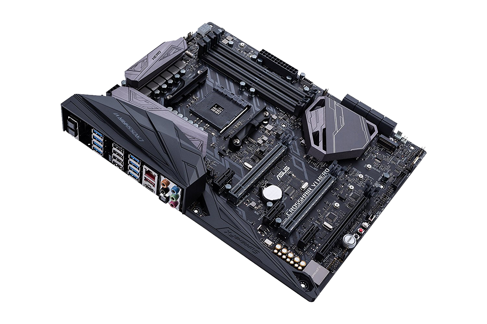
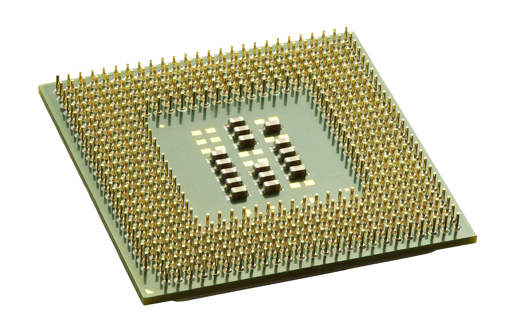
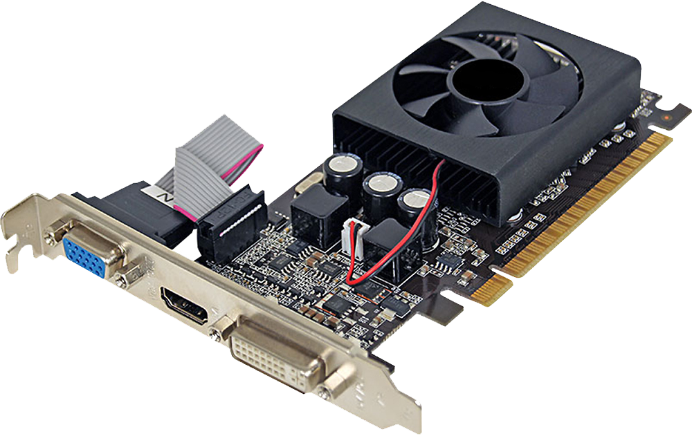
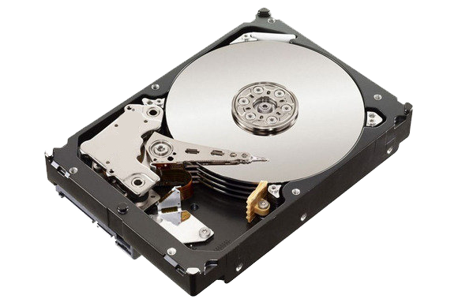
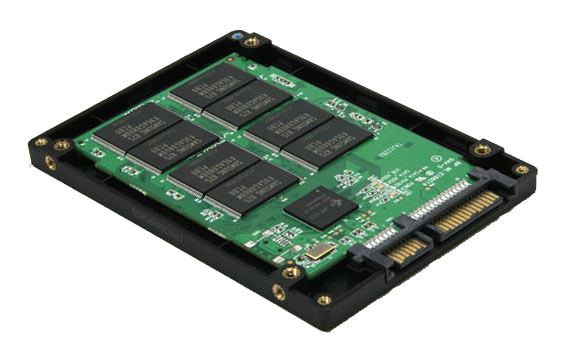
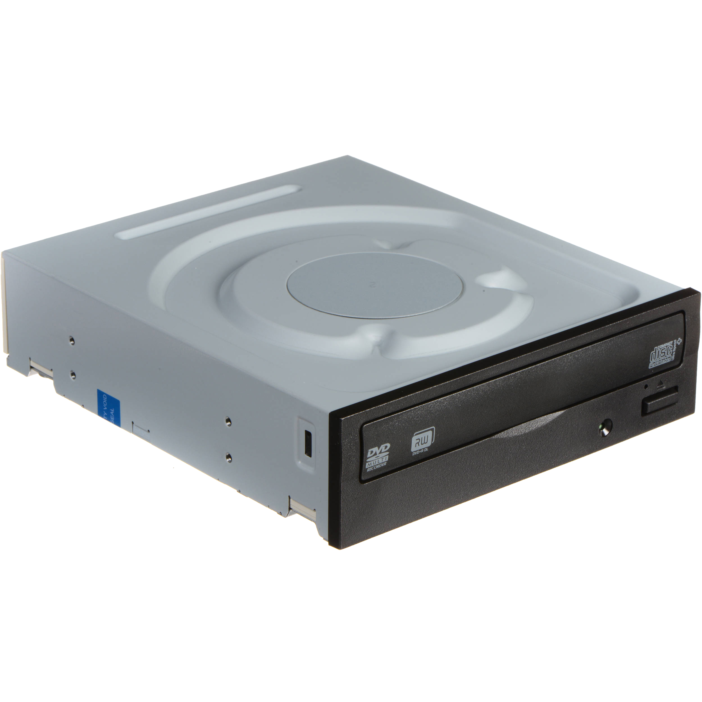
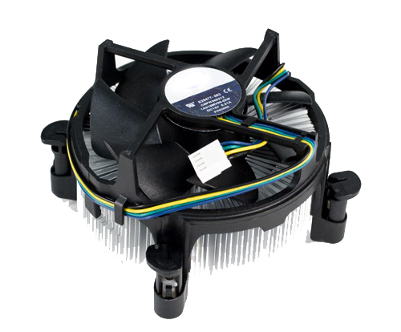

What is a computer?
To make it simple, a computer is something used for computing! Who would have guessed? Computers can be as simple as a house calculator, or a super high-tech supercomputer, such used by astronauts! The most usual computers we see are the ones we use at home. They can also hold or store information, which might look like regular language to us, but are actually just a bunch of 1’s and 0’s! How cool is that?
What are the purpose and benefits
Computers can do all sorts of stuff! The most common thing it’s used for today is to browse the internet to either communicate with people, or search the web to do research! The computer has slated itself as a necessity in everyday modern life.
Computers are used to do what a lot of normal people can’t!
 |
This is the system unit.
This contains and protects all the parts needed by the computer to process data.
|
 |
This is the monitor.
This is where you see everything that the computer does.
|
 |
This is the printer.
It is an output device you use to create a hardcopy of your documents.
|
 |
This is the keyboard.
It is an input device you use to type your documents.
|
 |
This is the speaker.
It is an output device you can use to listen to music.
|
 |
This is the mouse.
It is an input device you can use to point and click the things you see on the monitor.
|
 |
This is the microphone.
It is an input device you use to talk to other people.
|
Let's go inside the system unit!
|  |
This is the motherboard.
It is a medium for all the parts of the system unit to communicate with one another.
|
|  |
This is the CPU or the Central Processing Unit.
This is the brain of the computer. It does all the computations needed by the computer.
|
 |
This is the RAM or the Random Access Memory.
This is the primary memory used by the computer to process data. This memory is not permanent and the computer forgets the data written here after the program finishes.
|
|  |
This is the GPU or the Graphics Processing Unit.
This is generally used by gamers and designers to process graphics faster. It takes the job of processing the graphics and makes the job of the CPU easier.
|
|  |
This is the HDD or the Hard Disk Drive.
This is the secondary memory where you can store your files. There are also portable versions of this called an External Hard Drive.
|
|  |
This is the SSD or the Solid State Drive.
This is faster than a HDD but also more expensive. This is usually used by computers so that the operating system would load faster.
|
|  |
This is the CD-ROM.
You can insert a CD here to store data.
|
|  |
This is the fan.
This is used by the system unit to prevent the computer from overheating.
|
 |
This is the PSU or the Power Supply Unit.
It is needed to power the computer.
|
Thinking like a Computer
Have you ever wondered why computers speak binary?
With all these 1's and 0's, it is really confusing to people.
But to computers, it seems very easy. Why?
Well, to computers, 1's and 0's is easy to understand because they only understand two states.
A state with electricity, and another without electricity.
But doesn't this mean that the computer is limited to think in these two states?
Well if we add another digit called a bit we can now have 4 states, namely: 00, 01, 10, 11.
And this can expand infinitely and programmers gave these states meaning so that we can recreate our language in the computer.
Let's build a computer!
drag n drop those components!
THANK YOU FOR READING
YOU ARE ONE STEP CLOSER BECOMING A PC MASTER RACE!
short explanation what is pc master race....